Cabinets of Curiosities
Introduction
Looking at and playing with small toys was something I loved when I was a kid. I had a whole collection of Schleich animals and my parents bought me a little vitrine where I kept them. It wasn’t really a cabinet of curiosities, but a collection of miniatures. This early interest of mine is what brought me to look closer at the origin of collecting. Since the Middle Stone Age, humans have been carrying items of value with them. Keeping resources for the future and being able to trade meant a more stable life – a good incentive to start to accumulate objects. However, since there are so many types of collections and collectors, a lot of theories exist on the reasons behind this routine.1
Of course, a lot of collections had to do with the showcase of wealth. People were collecting to gain admiration and respect from their community and to present their good taste. A collection was something like a status symbol, however, this high regard for collecting and the habit of exhibiting in museums was a very western development. In other cultures, collectors were perceived as hoarders, and nobody recognized the value of their collections.2 Others find satisfaction in the hunt for the objects. Browsing flea markets and antiquity stores, negotiating a clever price and tracking down super rare pieces can feel more rewarding and fun than owning the object in the end.
Then there is the aspect of history and preservation. Many collectors have a feeling of nostalgia when looking at old objects and want to keep these memories, which can help to feel closer to one’s culture and ancestors. Historical collections also help us to understand what was valuable in different time periods.3 Another drive behind collecting is the community and network people get when starting this hobby. It is always nice to talk to peers with the same interest and to share one’s passion with like-minded people. Collecting here becomes a social activity.4 A big purpose of collecting is also the educational aspect. Collectors put a lot of time and effort into their collections and by doing so, acquire a lot of knowledge about their topic of interest. Collecting therefore can be seen as the human process of trying to understand the world and make it one’s own.5
Conclusively it can be said that through the routine of collecting, humans are trying to connect: sometimes with themselves and in other cases with their community or the world around them. We are searching for a sense of belonging, our place in the world and deeper understanding of our own identity.6 Sometimes, a collection can serve as a portal, transporting us into another world – be it the past, the future, or simply an alternate reality we wish to inhabit. This thesis will investigate how collections reflect our identities and visions of the world, starting with cabinets of curiosities.
Chapter 1
Cabinets of Curiosities
A little museum in a cabinet – that is how you could describe a Cabinet of Curiosities. Also called “Kunst- or Wunderkammer”, this form of collecting started mostly in northern Europe in the 16th and 17th century and its purpose was to amaze and wow the viewer.7 The wonder rooms were filled with all kinds of objects, ranging from artworks and animals to scientific tools. There were no rules regarding the collections, however, the objects had one thing in common: they were rare, unusual, and felt exotic. Not all cabinets looked alike. While many pieces were displayed in real cabinets, drawers and shelfs, other collectors had whole rooms dedicated to their collections. It was men from the upper class who filled the cabinets: aristocrats, merchants and scientific scholars, and numerous collections would later become part of famous museums. The cabinets were the early stage of a modern museum.8
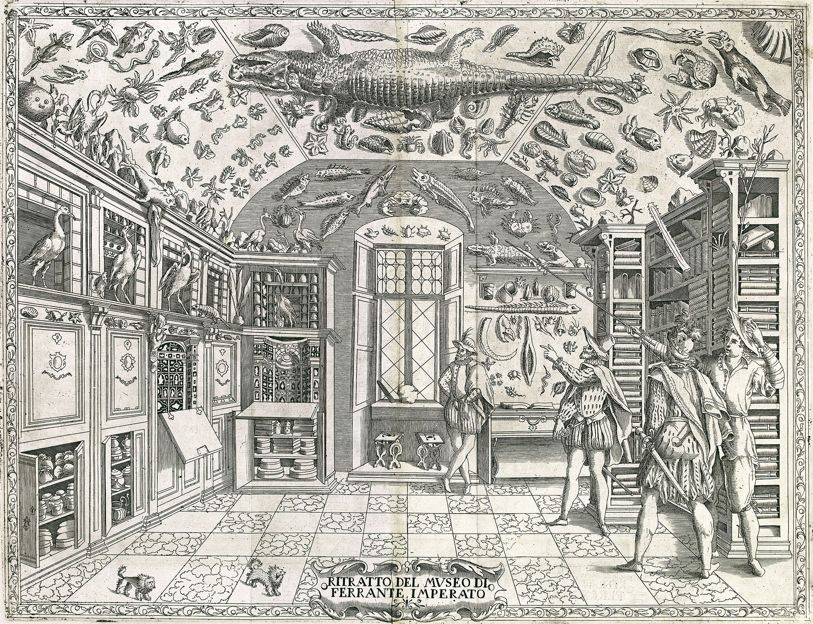 Dell’Historia Naturale by the apothecary Ferrante Imperato, 1599 The book Dell’Historia Naturale by the apothecary Ferrante Imperato from 1599 includes the earliest depiction of a cabinet.9 The illustration shows a collection of natural history in Naples and one cannot fail to notice a huge crocodile hanging from the ceiling. The big reptile was a very popular and wanted object for such cabinets, since people were fascinated by the exotic animal. Similar to „freak shows“, the notion of exoticism was the selling point, and the crocodile is a good example of the feeling that pieces should evoke in the visitors: the big monster above their heads aroused interest, but also horror, and impressed everyone coming to the room.10 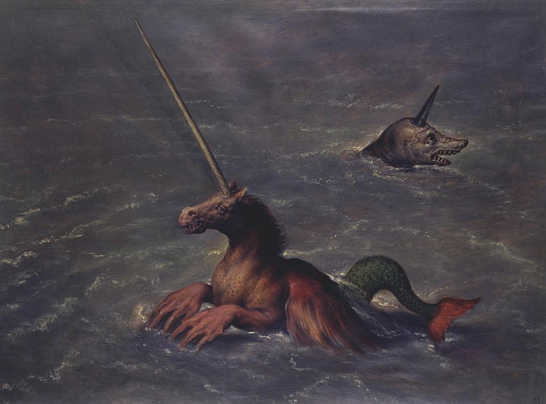Sea-unicorn, from Rudolf II’s *Bestiarium*, 1607–1612 A lot of the wonder rooms had an educational purpose and were trying to explain the world truthfully through arranging the artefacts according to geography or another specific system.11 In other cabinets, facts and myths mixed and they also contained fictional creatures.12 The wonder rooms of emperor Rudolf II in Prague for example featured paintings of mythical creatures like dragons and unicorns.13
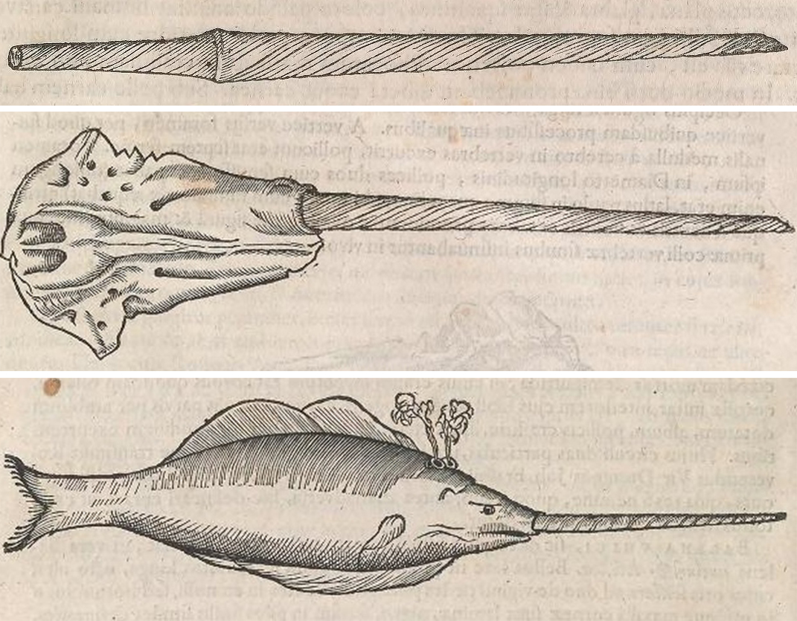Illustration of the mystical narwhal’s tusk, Museum Wormianum 1655 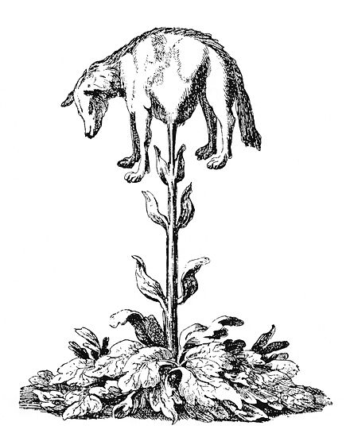The Vegetable Lamp of Tartary, 1887 Back then, it was believed that a narwhal’s tusk was the horn of a unicorn and had medical powers, and the “unicorn horn” was therefore proudly exhibited in wonder rooms. Worm doubted this, since he had never seen it attached to a skull, and later recognized that the horns belonged to narwhals.14 However, he also believed in the Scythian Lamb (also called the Vegetable Lamb of Tartary), an animal-plant that would have sheep as fruit and based this on a soft plant in his collection.15
In general, the objects in a wonder room were classified in two main categories, naturalia and artificialia,16 both Latin terms. 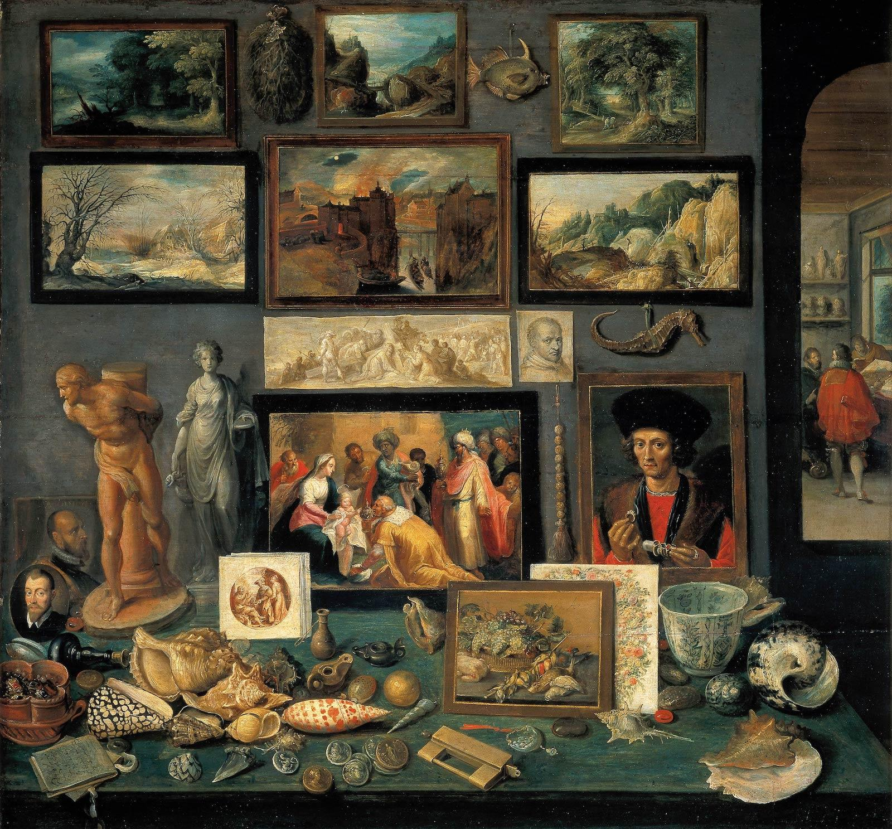Frans Francken the Younger, Chamber of Art and Curiosities, 1636, Kunsthistorisches Museum, Vienna Austria 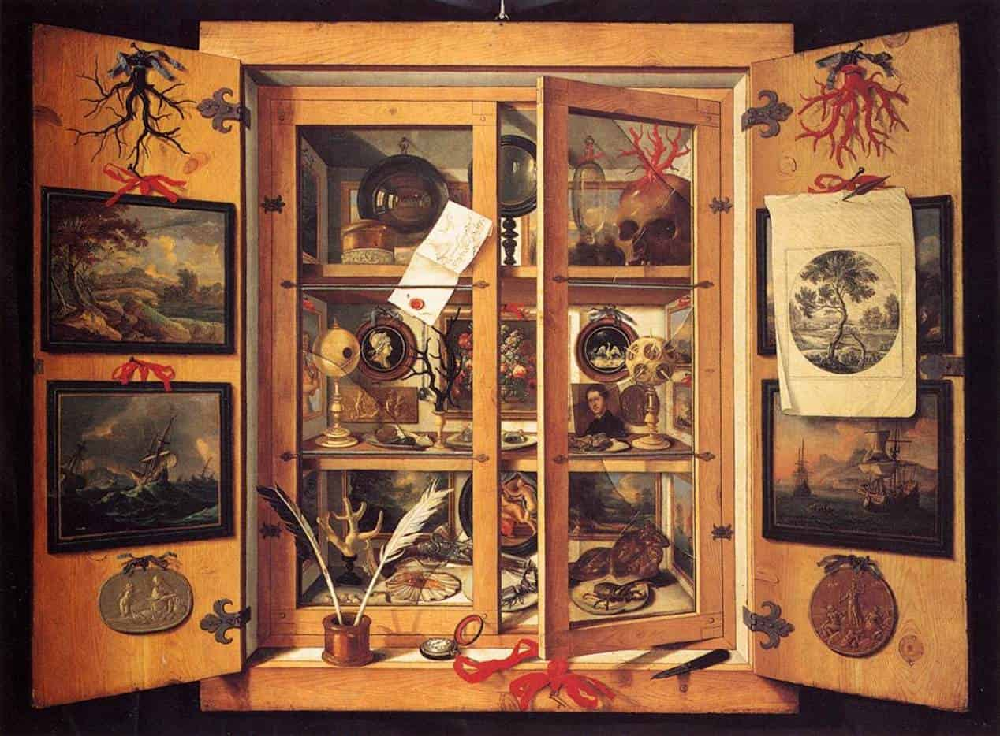Domenico Remps, Cabinet of Curiosities, 1690, Museo dell’Opificio delle Pietre Dure, Florence, Italy Naturalia contained everything existing in nature, like skeletons and stuffed animals, plant examples and fossils. It was also popular to create and believe in monsters and rare creatures. Collectors achieved this through combining and arranging different parts of animals together. A subcategory belonging to naturalia was exotica, which described exotic and rare objects from faraway.17 They were often collected on journeys and were used to show off how well educated and well-traveled the owner was. Everyone was drawn to luxurious objects, and a cabinet full of exotic things was perfect for entertaining guests and telling stories about adventures in foreign lands. Sometimes these stories were not true though, and the admired items were coming from flea markets instead of dangerous trips.18
The category artificialia consisted of human made objects like art, cultural antiquities and different scientific tools. These science related objects were also called scientifica and were very respected since the knowledge around it was quite new and people were fascinated by its wonders. Another big reason for the popularity of scientifica and the wonder rooms in general was its display of the power of men over the natural world.19 Collectors could arrange the objects how they wished and thus, create their own world. The act of putting the whole universe in a cabinet made them feel superior and like the master of the planet. Humans always try to find correlations between and explanations for things happening in the world and we do not like to admit that we do not understand everything. Cabinets of curiosities therefore also had the function of making the world seem smaller and less complicated than it is.20 Were cabinets maybe the beginning of mansplaining?
However, as innocent as the cabinets seem, they are very much connected to Europe’s colonial past and were driven by the desire to understand and own the whole world.21 A lot of the unique objects and specimen were found on colonial trade routes, taken from local inhabitants while not understanding its real cultural history and meaning. The collectors portrayed and organized the objects with their personal perspective on the world in mind, which gave them the control to decide what should be considered as relevant and valuable. These very subjective decisions, biased by the amount of knowledge they had and how many places they had visited, still have implications today. Parts of famous cabinets belong to big museums now and we still can see and feel the outdated hierarchies and a colonial standpoint.22 For instance, museums exhibit art that is considered prestigious and art that is called “primitive”, often coming from colonized cultures and presented with little understanding about their traditions.
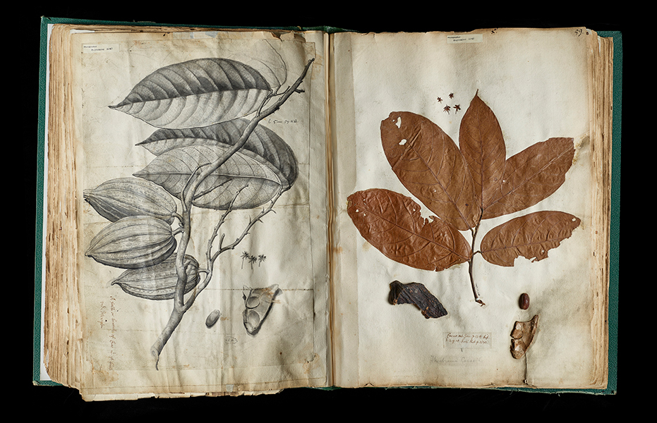 Cocoa plant brought back from Jamaica in 1689 by Hans Sloane. A collection that benefited immensely from colonialism and slavery is the one of Sir Hans Sloane, a famous British physician and a well-known collector. He accumulated over 71,000 items, which later became the foundation of the British Museum. Most of his exotic specimen came from Jamaica, a British colony, where he worked as a doctor. He owes a lot of his success and knowledge to the enslaved people from West Africa, who helped him in his search. He also married Elizabeth Langley Rose, the widow of a plantation owner in Jamaica, which meant that he was directly profiting from slavery and could continue with his career.23
Another way of thinking inherited from the cabinets is the division between naturalia and artificialia, which became stronger in the 18th century and led to a disconnection between us and nature (spoken from a western standpoint).24 This is mirrored in the way we talk about and treat our planet, distance us from things happening on earth and why some people see geoengineering as a legitimate solution for climate change. Having said that, some museums are starting to delve into their past and are initiating conversations about how the old structures could be rethought.25
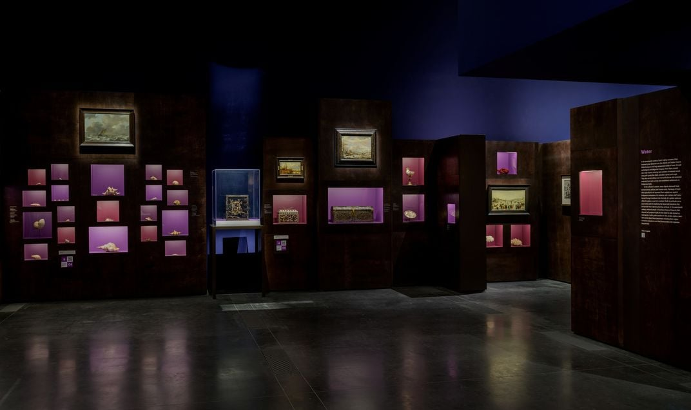LACMA, “The World Made Wondrous: The Dutch Collector’s Cabinet and the Politics of Possession”, 2023 – 2024 An exhibition that deals with the topic of a colonial past is “The World Made Wondrous: The Dutch Collector’s Cabinet and the Politics of Possession” at the LACMA museum, curated by Diva Zumaya.26 It is showing a fictional cabinet of curiosities by a Dutch merchant from the 17th century, combined with work by contemporary artists like Jennifer Ling Datchuk, Todd Gray, Sithabile Mlotshwa and Uýra Sodoma. Visitors therefore can see old artefacts from the LACMA collection next to pieces that explain the history of slavery behind them as well as the meaning these artefacts had in the countries and cultures they were stolen from. A photograph showing the deforestation of the Amazon Rainforest by Uýra Sodoma for example is shown next to a painting of a plantation from 1655, reminding us of colonial consequences still present in our society. In a wonder room, the collector would show and explain the collection to the audience, at LACMA, an audio guide takes on this role. It is leading visitors through the exhibition and tells stories from people that are usually not represented in big museums and institutions, talking about the oppression, violence, and the many victims it took to acquire these objects.27
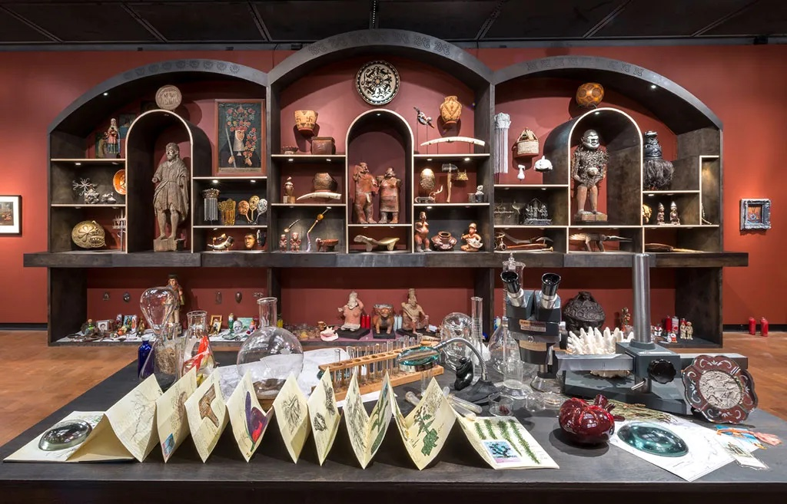“New World Wunderkammer: A Project by Amalia Mesa-Bains”, 2013–14, Fowler Museum at UCLA. In 2013 – 2014, the Fowler Museum in California showed the project “New World Wunderkammer” by the Chicana artist Amalia Mesa-Bains, in which she recreated three cabinets of curiosities based on the histories of indigenous Americas, African people and colonial mestizaje (the mix between Native American, African, and European peoples). Using pieces from the museum’s collection as well as her own artwork, Mesa-Bains is re-establishing the real meanings of the cultural and spiritual objects and giving them equal importance as western art.28
Chapter 2
Dollhouses
When writing about cabinets of curiosities, it is not possible to oversee how similar cabinet dollhouses from the 17th century look. Originally, these were not intended for kids to play with: instead, they were used to display wealth and could be seen as an alternative to the classic wonder rooms for female collectors.29 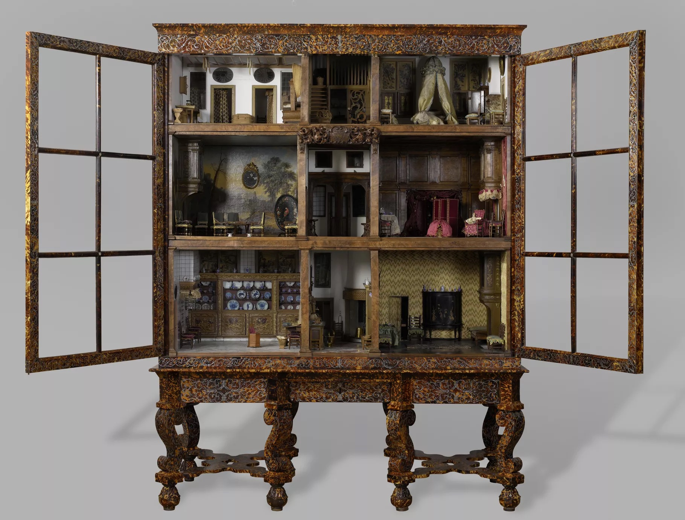Dollhouse of Petronella Oortman, c.1686 – 1710, Rjksmuseum Dollhouses appeared in the 16th century in northern Europe, mostly in Germany, the Netherlands and England, and were a status symbol for the upper class. While referred to as “Dockenhaus” in Germany, which meant “miniature house”, the Dutch called their models “cabinet houses”. This is a very fitting name, since the houses were built in wooden China cabinets, that were opening at the front and could be locked.30
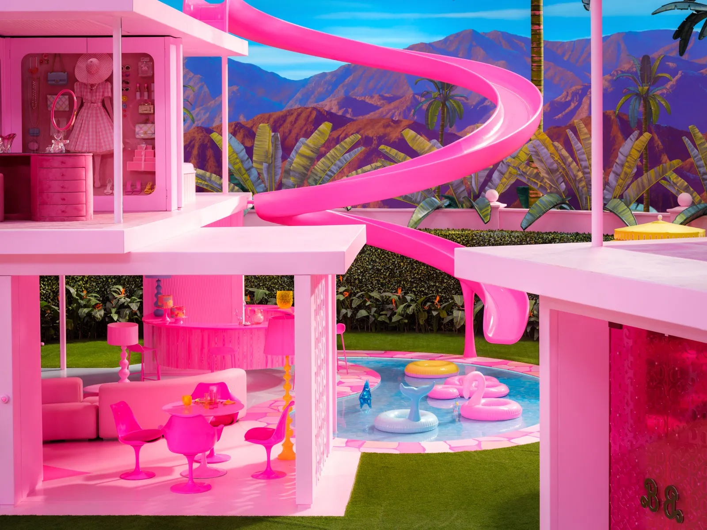Buitendijk, Jaap. Warner Bros. Barbie Dreamhouse 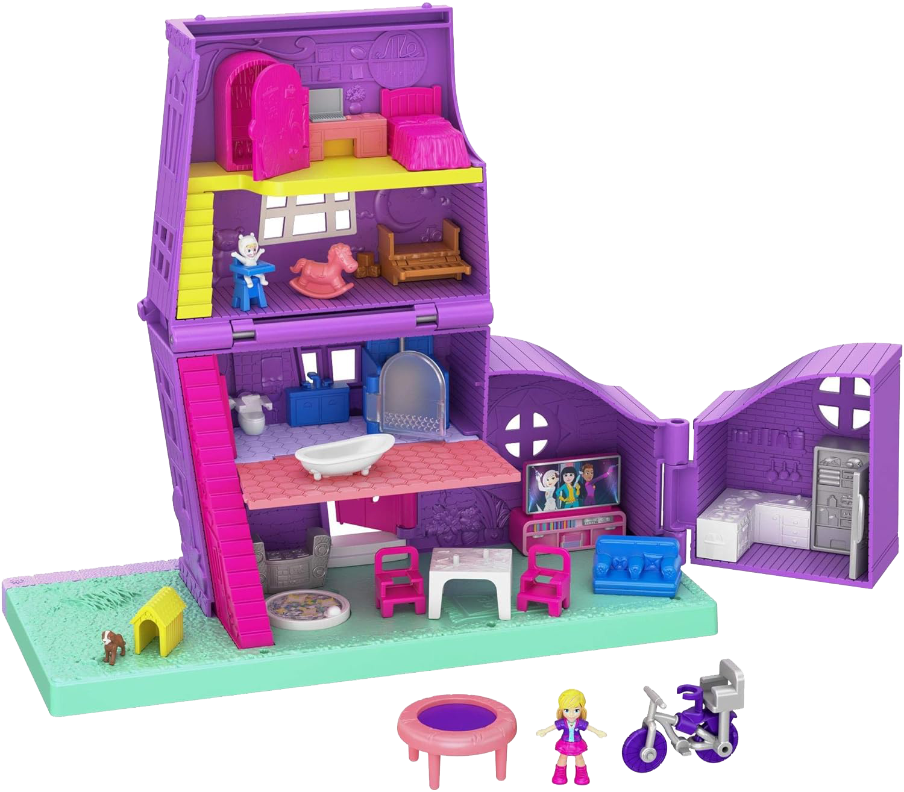Mattel. Polly Pocket Doll House They rarely were depictions of one’s own house, only the tradition of “baby houses” in England in the 18th century showed a miniature of the real owner’s house, also called Victorian Houses. Dollhouses only became a common toy and an object for kids after the industrial revolution and with the start of mass production, which made them affordable for normal households. They are still very popular among kids, the hype around the Barbie dream house and Polly pocket toys shows this very well.31 The fascination for dollhouses does not end with childhood though, there are enough adult fans who collect or even build their own models and companies like Mulvany & Rogers sell exquisite models worth £50,000 for serious buyers.32 However, it is important to delve into the dollhouses from a gender perspective and to understand the female role in it.
Many dollhouses were used for educational purposes for young women and taught them everything that needed to be looked after in a family home. 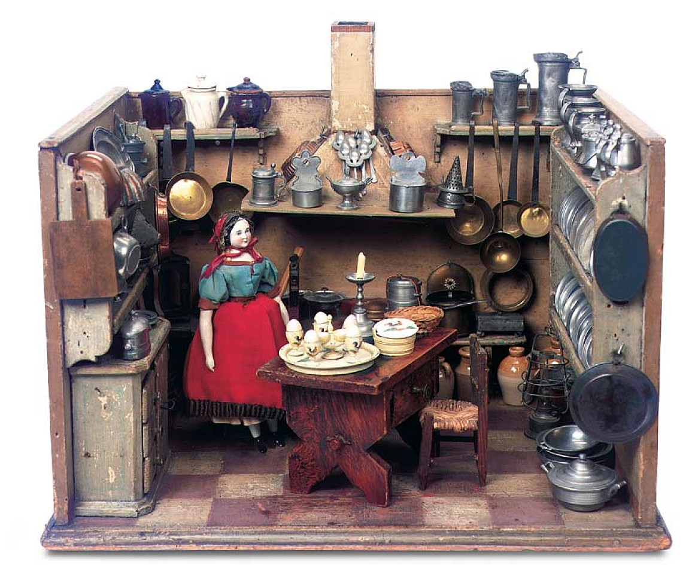Early Nuremberg Kitchen, circa 1820 A modified version of classic dollhouses are “Nuremberg kitchens”, which were made to teach girls how to use a kitchen. Instead of multiple floors, Nuremberg kitchens consisted of a single room with a kitchen set and a lot of pots, pans and other necessary objects. They were mostly made from metal and produced in Germany. It was a clever way to get girls excited about the kitchen space, which was maybe even more important than the practical household skills. Clearly, not all girls automatically thought of their role as caretaker or in the kitchen. Through the captivating miniature model, women learned to see the kitchen as a space for play and delight and accepted the traditional heteronormative future expectations.33
 Dollhouse of Sara Rothé, 1743-1843.
Gemeentemuseum Den Haag.
The cabinet houses from the 17th century were an object of luxury and were thought
through down to every single detail. They included different materials and
handcrafted pieces, and the rooms were as richly decorated as real interiors. This detailed perfection
on small scale was what fascinated the viewers and made it
a popular hobby for Dutch women of the wealthy class.34
Dollhouse of Sara Rothé, 1743-1843.
Gemeentemuseum Den Haag.
The cabinet houses from the 17th century were an object of luxury and were thought
through down to every single detail. They included different materials and
handcrafted pieces, and the rooms were as richly decorated as real interiors. This detailed perfection
on small scale was what fascinated the viewers and made it
a popular hobby for Dutch women of the wealthy class.34
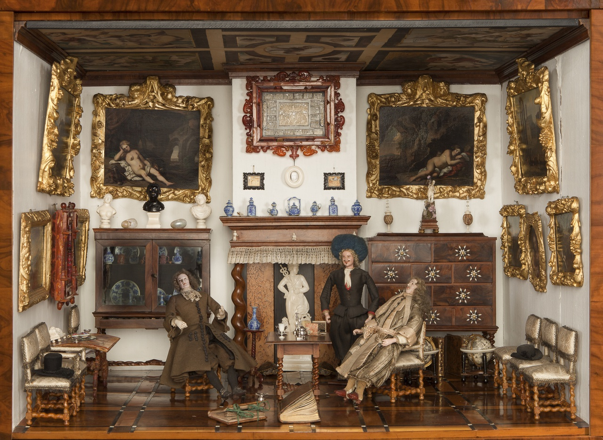Dollhouse of Petronella de la Court (1624- 1707). Centraal Museum Utrecht. In general, women were expected to spend money wisely and only for domestic reasons. It was usually seen as their husband’s money and the expenses were also overlooked by the husband. Men also believed in a female desire to spend money and therefore guidelines and handbooks for women which warned about unnecessary spending and gave tips on how to properly manage finances were common.35 The expensive dollhouses were an exception and an opportunity for privileged women to show their ability to control money and make autonomous decisions. It was probably accepted since the hobby was very much connected to domestic life and the models showed ideal households.36 The perfectly organized house demonstrated how well women understood and ran the household, that they had a feeling for quality and craft as well as a good taste in interior design and decoration.37 Not surprisingly though, dollhouses were sometimes still criticized and presented as lavish spending. Despite the craft being of high quality and even though they had much in common with the famous cabinets of curiosities, they were never taken as seriously as the collections of men at that time.38
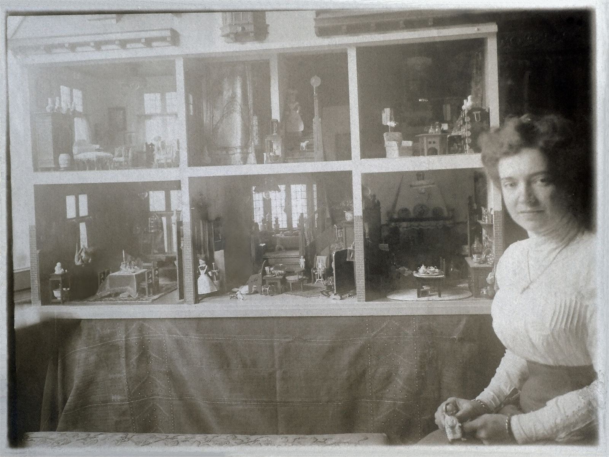Lita Tholen-De Ranitz with her Dollhouse, ca.1920 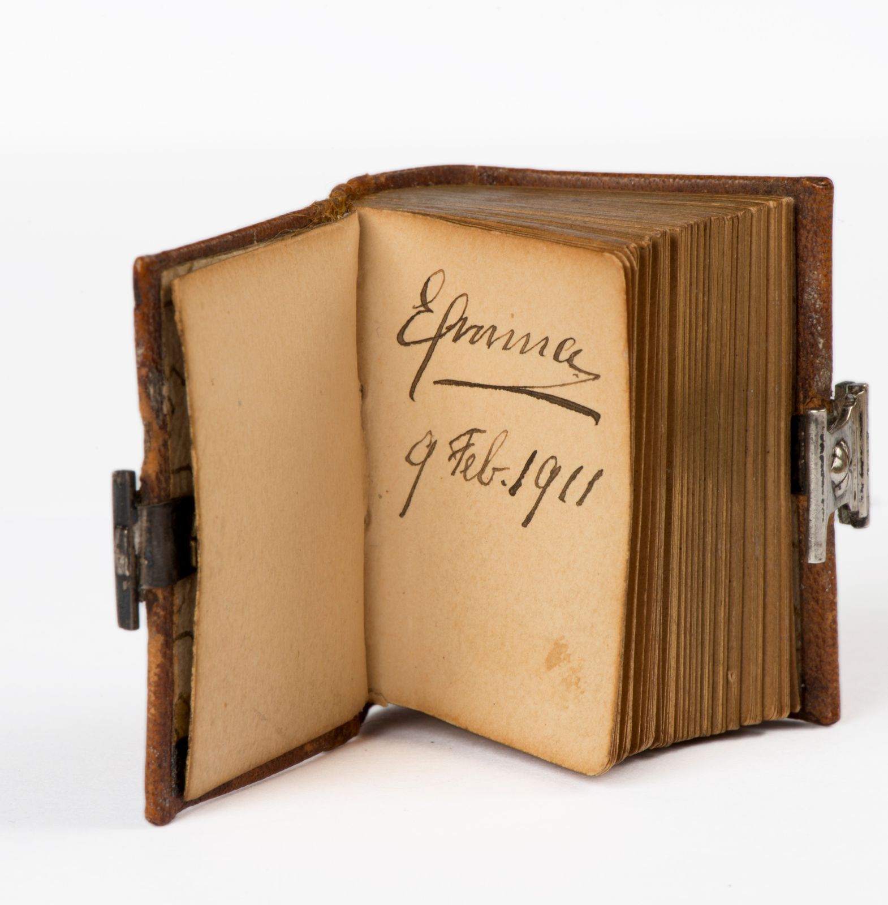Queen Emma’s signature in the miniature guest book, 1911. Like in a “Kunstkammer”, the splendid interior of dollhouses was filled with extravagant materials: silver, ivory, lace, silk, marble and porcelain, some of it coming from trade made in and around colonies.39 The little objects were often crafted by the same people who would also create regular size versions. Paintings for example were made by artists and miniature books were real books that you could flick through and read.40 The dollhouse of Lita de Ranitz for instance, which was built in 1910 in The Hague, had a guestbook with a signature of Queen Emma on the front page. The paintings in the miniature villa came from famous painters Lita de Ranitz was friends with, like Toorop, Gabriel, Mauve, Jongkind and Arntzenius.41
Another parallel to the cabinet of curiosities is the creation of a microcosm – and the control over it. The miniature houses make people behave differently. You must bend over if you want to see more precisely, and you have to minimize your movements in order not to break anything. The creator knew the house very well of course and therefore could interact effortlessly.42 Miniature models also change the perception of time and make viewers think that more time has passed since starting to look at the dollhouse.43 This means, as Susan Stewart writes in her book “On Longing”, that miniatures slow down or even stop time and make space for infinite daydreams.44 In my opinion, that is why kids can spend hours playing with a dollhouse, miniature toys or the videogame SIMS. 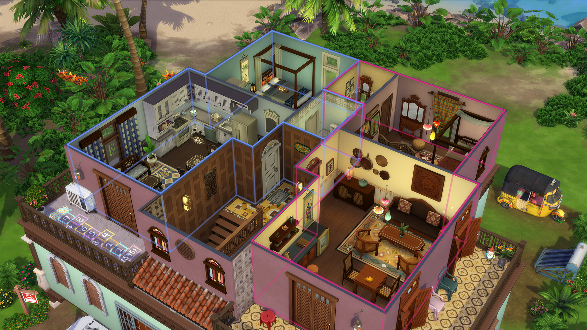Sims™ 4 You can create all the scenarios you want and are able to rearrange and redecorate anytime you become tired of your fantasy universe. I remember building houses for my dolls out of my duvet, which never turned out the same, and the process of creating and deciding what should be where was what made playing with them exciting. Dollhouses allowed women to arrange a house and hence their own world in a way they wished it to be – for once, they were the rule makers. Gaston Bachelard writes in Poetics of Space:
“The cleverer I am at miniaturizing the world, the better I possess it.”
(Bachelard, Poetics of space 150)
This describes very well why dollhouses could be seen as a chance for independence: they gave women full control over a little universe and at the same time were a place for imagination.45
Chapter 3
Houses of Curiosities
 Sir John Soane Museum,
Dome Space
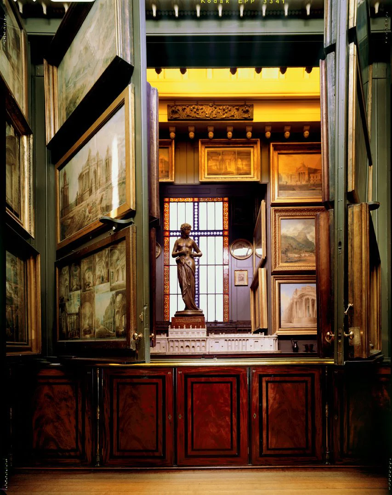Sir John Soane Museum, Picture
Room Recess
If you take a “Wunderkammer” and a dollhouse and put them together, you will get a
house of curiosities. As already mentioned, cabinets of curiosities sometimes were
bigger than a piece of furniture, they took the form of rooms and in some cases, even
of a whole house.
One good example for that is the house of Sir John Soane, a successful British
architect and collector of art and architecture. His interest in Classical art started on
his Grand Tour (which was very common for wealthy young men at that time), where
he visited ancient cities in Italy and Greece. He bought and reworked three
neighboring houses in London for the display of his growing collection, that consists of paintings,
books, drawings, architectural models and sculptures ranging in size. It
is not only the amount of collected pieces that is impressive, but also the whole
house also (which was turned into a museum) is an adventure to walk through. Each
room looks completely different but is always packed with art and sculptures. The
three buildings are connected through corridors, and secret doors and weird lighting
make you feel like in a labyrinth. Even though it could appear like a house without
any order, Soane thought a lot about the placement of the objects and recomposed
the rooms often to find new connections between the art pieces.46 As impressive as
this house is, we should keep in mind that also here colonialism was a big factor that helped Soane to
acquire all these objects and that he projected his western view on
the artworks. I doubt for example, that the sarcophagus of the Egyptian Pharaoh Seti
I., which is one of the biggest pieces in Soane’s Musuem, would be exhibited in the
same way in Egypt.
Sir John Soane Museum,
Dome Space
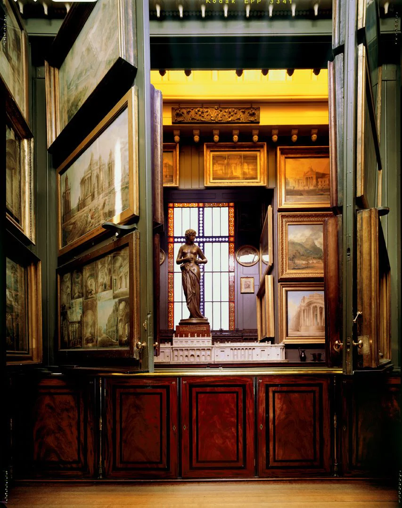Sir John Soane Museum, Picture
Room Recess
If you take a “Wunderkammer” and a dollhouse and put them together, you will get a
house of curiosities. As already mentioned, cabinets of curiosities sometimes were
bigger than a piece of furniture, they took the form of rooms and in some cases, even
of a whole house.
One good example for that is the house of Sir John Soane, a successful British
architect and collector of art and architecture. His interest in Classical art started on
his Grand Tour (which was very common for wealthy young men at that time), where
he visited ancient cities in Italy and Greece. He bought and reworked three
neighboring houses in London for the display of his growing collection, that consists of paintings,
books, drawings, architectural models and sculptures ranging in size. It
is not only the amount of collected pieces that is impressive, but also the whole
house also (which was turned into a museum) is an adventure to walk through. Each
room looks completely different but is always packed with art and sculptures. The
three buildings are connected through corridors, and secret doors and weird lighting
make you feel like in a labyrinth. Even though it could appear like a house without
any order, Soane thought a lot about the placement of the objects and recomposed
the rooms often to find new connections between the art pieces.46 As impressive as
this house is, we should keep in mind that also here colonialism was a big factor that helped Soane to
acquire all these objects and that he projected his western view on
the artworks. I doubt for example, that the sarcophagus of the Egyptian Pharaoh Seti
I., which is one of the biggest pieces in Soane’s Musuem, would be exhibited in the
same way in Egypt.
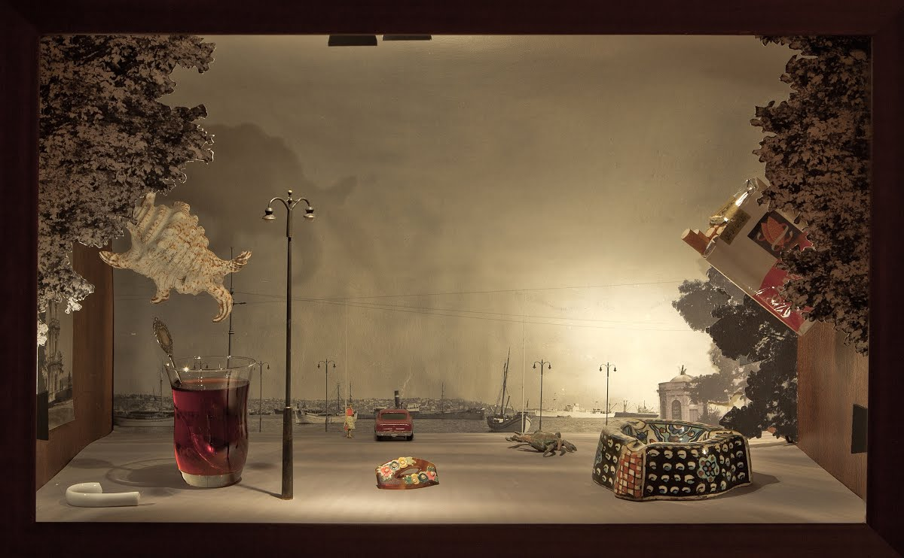The Museum of Innocence, Box 14 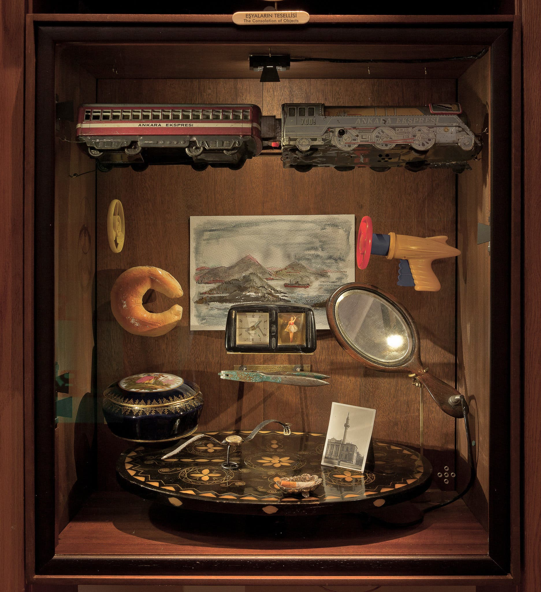The Museum of Innocence, Box 28 Another famous House Museum is the Museum of Innocence in Istanbul by the novelist Orhan Pamuk. He had the idea to write a novel and to create a museum as its counterpart. Both tell the love story of Kemal and Füsun, two people living in Istanbul in the 70s and 80s. The museum consists of everyday objects belonging to the characters in the novel, for example an earring Füsun drops, or kitchen ware their families would use. The author collected the items throughout the years on flea markets and antiquity stores and it was important to him that they were authentic and that they represented the real Istanbul of that time. Through showing objects his audience knows very well and can relate to, the story comes more alive. The pieces are exhibited in carefully arranged boxes and vitrines, and Pamuk himself said that the idea was coming from the classic “Wunderkammer”. Each vitrine contains a composition of objects that tell a part of the story.47 In the catalogue of his museum called The Innocence of Objects, Pamuk writes about how he figured out that when objects are taken out of their normal surrounding and composed together, they start to interact and get a new meaning.48 He also wrote a short manifesto for museums where he argues that the future should focus on smaller and cheaper museums, instead of big institutions representing the state. Point 3 of this manifesto states:
“… We all know that the ordinary, everyday stories of
individuals are richer,
more humane, and much more joyful. “
(Pamuk, The innocence of objects 55)
And point 11 of the manifesto says:
“The future of museums is inside our own homes.”
(Pamuk, The innocence of objects 57)
The domestic sphere and collecting of curiosities are very much intertwined. One could see living rooms as cabinets of curiosities, decorated with items that we got as gifts, objects we find fascinating or aesthetically pleasing and things we bought on trips, reminding us of the places we visited. These souvenirs are the modern equivalent to the exotic artefacts in wonder rooms. Buying cultural objects without knowing its meaning and using them in another context is cultural appropriation. Unfortunately, a lot of fake souvenirs are sold which are not authentically made by the native population. In some cases, objects are even sold in the wrong region or country, and tourist have no clue about their real point of origin.49
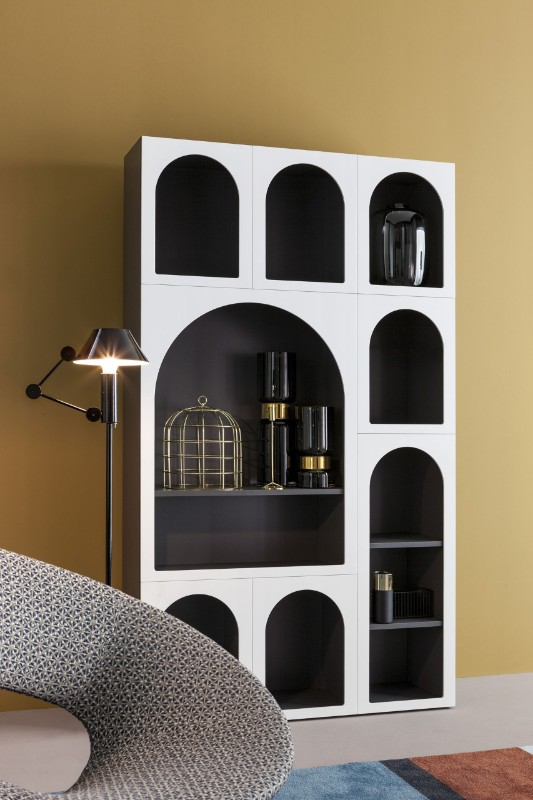Fabrice Berrux & Bonaldo: “Cabinet de Curiosité” There is also a trend in interior design that you can observe in trendy cafes or homes from celebrities, where you can find unusual and quirky deco objects displayed. Sometimes there is a backstory to it – and sometimes the object’s purpose is only to intrigue. In both cases, only the person living in the space can tell the visitors more about it.50 Further, there are designed bookcases that resemble cabinets of curiosities which are made solely to present decorative items.51 Surrounding ourselves with objects we like or are fascinated by makes sense though, because people we invite to our house immediately get a sense of who we are. Teenage bedrooms are probably the most drastic example here: walls filled with posters and crazy wallpapers almost scream the identity of the resident when entering the room. Architectural historian Gillian Darley for example describes Sir John Soane’s House Museum as an autobiography52 and Orhan Pamuk argues that some collectors only collect to create a new identity for themselves.53
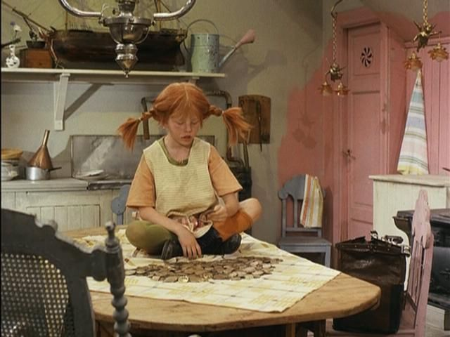Pippi Longstocking, 1969 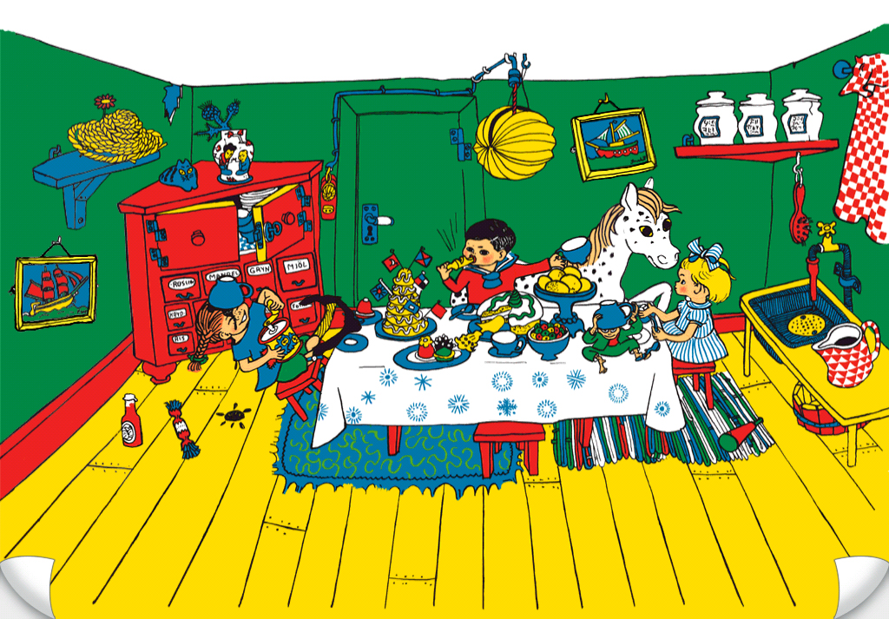Illustration of Pippi Longstocking by Ingrid Vang Nyman. A house most people have heard about is the Villa Kunterbunt, the weird and wonderful home of Pippi Langstrumpf. In her article “The Collection of Wonders – Pippi Longstocking’s Cabinet of Curiosities”, Elina Druker compares Pippi’s Home to a “Wunderkammer”. The chaotic house is filled with everyday objects as well as exotic artefacts: seashells, eggs, porcelain figures, pearl necklaces and numerous paintings collected from journeys Pippi and her missing father went on. These peculiar objects mirror Pippi’s peculiar character and underline her crazy stories about travel adventures from her past. Whether these stories are based on truth or fiction does not matter, just like in real curiosity cabinets. After entering Villa Kunterbunt, the inside and the outside world mix and visitors get to see Pippi’s version of it, the one she uniquely created for herself.54 When entering these houses be it in novels, film or in a museum, one understands that they all present their own microcosms.
Chapter 4
Contemporary Examples and Digital Cabinets
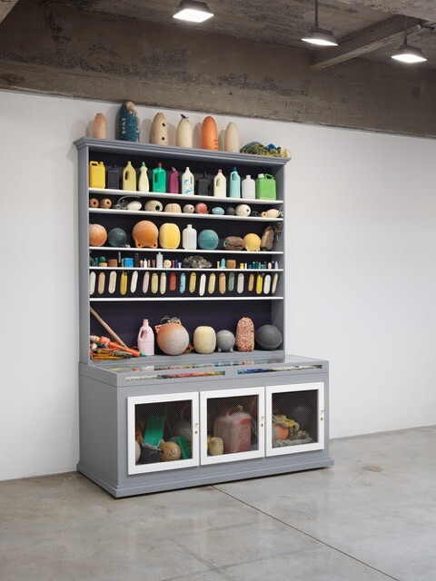Dion, Mark. Cabinet of Marine Debris, 2014. The motif of the wonder room is very common again and can be found referenced in a lot of contemporary artworks. Some people also call it the Wonder Room Renaissance.55 An artist who uses wonder cabinets often in his work is Mark Dion. He is interested in the way we see and collect nature and how we present the findings of the natural world. Through his installations, he is questioning the current narration and display techniques in big museums and institutions and is introducing a new, more playful and interactive way of exploring and gaining knowledge. His aim is to encourage the viewers to think and engage with information, rather than letting them just be passive consumers.56
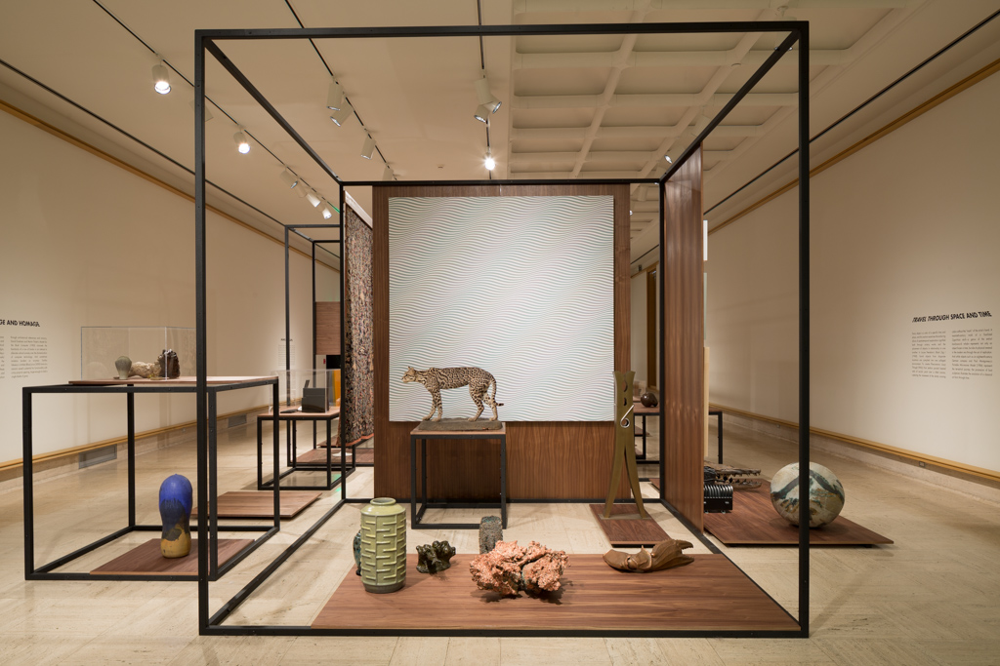The Cranbrook Hall of Wonders at the Cranbrook Art Museum Another contemporary cabinet was the exhibition “The Cranbrook Hall of Wonders: Artworks, Objects, and Natural Curiosities” by Laura Mott and Shelley Selim at the Cranbrook Art Museum. Instead of a classic vitrine they used a modular system to display the different objects, so that visitors could see the pieces from different angles. They argued that these changing compositions create new relations between the objects when walking around the installation. The curators also added a new element to the old “Wunderkammer” concept: living performances, which contrasted the still life.57
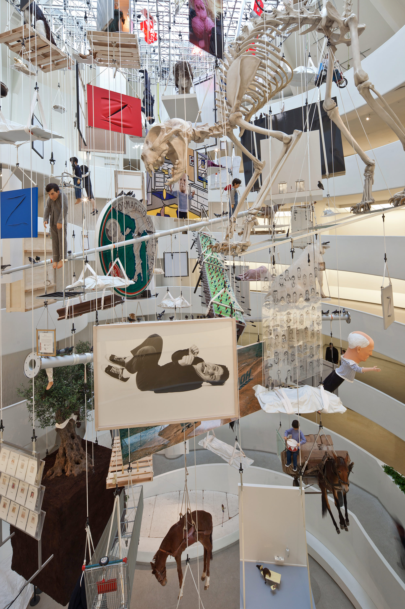Maurizio Cattelan: All. Guggenheim Museum, New York. 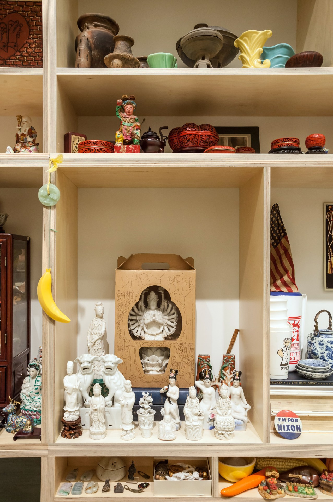Danh Vo, I M U U R 2’ at the Guggenheim Museum, New York. Two more intimate collections exhibited in the Guggenheim Museum in New York were Maurizio Cattelan’s “All” 58 and Danh Vo’s exhibition I M U U R 2. 59 Cattelan hang a collection of art pieces on ropes in the rotunda of the Guggenheim, which looked like a tragic suicide of objects. Vo was working with the collection by another artist, the painter Martin Wong. The exhibition showed around 4,000 objects, many connected to American pop culture, collected by Wong and his mother Florence Wong Fie, who co-curated this exhibition. Although the exhibitions are not complete archives, they give a glimpse into the life of the artists.
Going back to the concept of the curiosity cabinet is a solution of museums, curators, and artists for presenting knowledge in a more and more complex world. Museums understood that there is not just one way to look at a topic, and an exhibition in the style of a wonder room offers a more open and interactive way of exploring.60 When first starting this thesis, I was not very enthusiastic about cabinets of curiosities, since I was looking at them as another western colonial tradition. While I stress that everyone using a curiosity display should be aware of the colonial history it carries, I now also understand the potential of this type of collection and that it can activate the imagination in a more funny and inclusive way. An exhibition in the style of a cabinet lets viewers make their own connections between objects and discourses and there is not just one fixed interpretation of the subject.61 That allows a more personal experience, which I think can make a bigger impact on visitors.
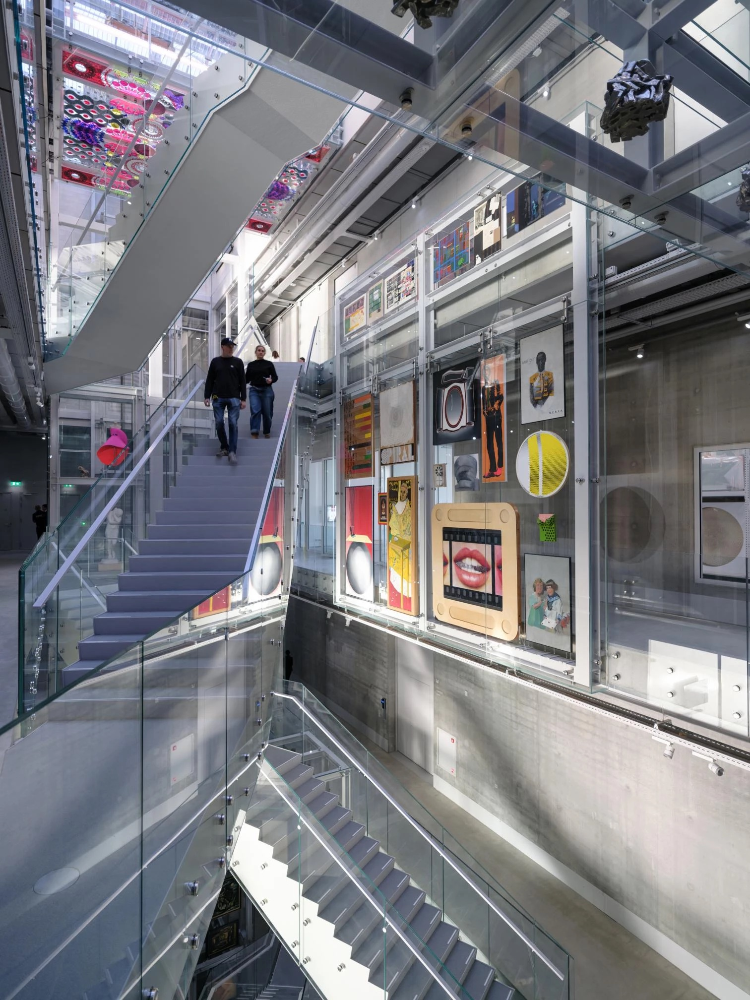Depot Boijmans Van Beuningen, Rotterdam The Depot Boijmans Van Beuningen in Rotterdam for example is achieving this effect: the art storage facility is showing its whole collection, not just selected pieces, and people can see artworks outside their usual contexts. Visitors can discover new metaphors within the objects and can even create their own collections of artworks in the app, which makes them a co-curator.62
This multiplicity and not being satisfied with just one view comes from being used to the digital world.63 We are living in a time where we can look up everything, can consume news and images from the whole world and are able to compare different sources – all of which leads to being overwhelmed and makes it impossible to keep an overview of everything. The wonder room is a good tool for showing complicated connections visually and making people understand little fragments of today’s world. The internet not only changed our consumption of information, but it could also be perceived as a platform for a new kind of cabinet of curiosities.64 We all have private collections on Pinterest and Instagram and are saving files in our folders, sometimes with a very precise folder structure. As in the historic cabinet, we are also collecting things we consider beautiful and unique. For some people it is fashion inspiration, others have folders full of recipes and screenshots from movies. We therefore again build a little personal world of things we like, a digital universe to our liking, our bubble. The cabinet becomes the bubble of curiosities. Whether analogue or digital, we like to collect things that matter to us and that help us to build or understand our identity. Nevertheless, we shouldn’t just stay in our familiar bubble, but also try to be open to other people’s cabinets – the purpose of a wonder room overall was not only to collect, but also to show and share these ideas. In the digital space, a development towards shared cabinets could support community and would resolve in collections not being biased by one person. 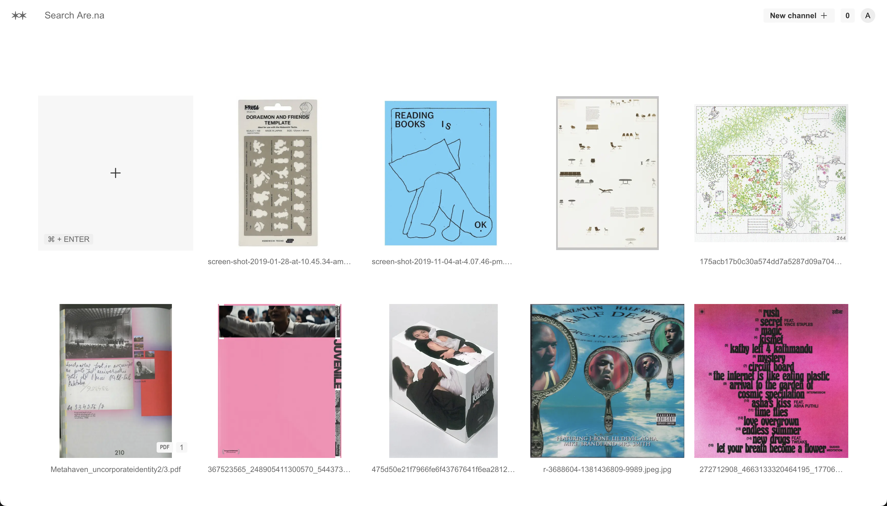Screenshot of my Are.na Collection One platform that comes to my mind is are.na, where users can collect and save images they like. The items are usually linked to its original source, and you can also see in what other collections they appear. This cross-referencing makes the search and collecting experience fair, respectful, and interactive. The biggest difference though is that the digital cabinet here is not closed off. You can access other cabinets from it, and thus new concepts and contradicting ideas. This hints to a universe that is bigger than one’s own collection, and in my opinion a healthy way to acknowledge that we do not understand and cannot collect the whole world.
Conclusion
Upon exploring the different forms of curiosity cabinets, we can see a clear pattern of collecting being tightly connected to our worldviews, whether the rational world or the fantasy one in our dreams. We collect things from our environment that we regard as beautiful or significant to us, and that captivate us in one way or another. We keep them to feel closer to ourselves, to understand the world around us and to also show other people our identity. Through arranging our collections in cabinets, rooms and houses, we are building our own little universe in which we decide the rules and where we feel safe. These individual microcosms give us space for reverie and allow us to imagine different worlds and alternative paths. I think that this escapism to a world where everything is possible is important and can help to recharge energy and be creative. However, in order not to just stay in our bubble and hide in our microcosm from the real world, our wonder rooms never should be completely done, but instead stay ready for redecoration, new ideas, change and development. The doors from our cabinets should stay wide open.
Bibliography
dillon_curiosityartandthepleasuresofknowing.php. Accessed 4 Feb. 2024.